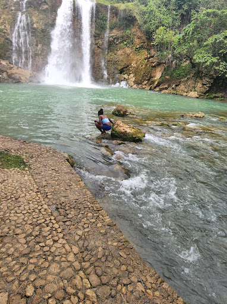

Ministère du tourisme
Ministère du tourismeSaut-Mathurine
-

- 
Saut-Mathurine est une cascade située à Camp-Perrin, Sud.
Il s'agit de l'une des plus grandes chutes d'eau en Haïti.
La chute d'eau s'étend sur la rivière de Cavaillon dans les hauteurs de Camp-Perrin.
Cette chute d’eau mesure à peu près 30 mètres de large et 27 mètres de hauteur.
La chute se trouve dans les hauteurs de Camp-Perrin à environ 7 kilomètres au Nord-Est de Centreville en empruntant la route no 7 jusqu’à Marceline.
Un kiosque d’à peu près 18 mètres carrés a été construit par le ministère du tourisme qui sert d’abri aux visiteurs et aux touristes comme un endroit panoramique,
pour contempler la chute à l’abri de la brume et la prise de photos ou un endroit pour prendre leur petit repas ou s’héberger au déclenchement des pluies fréquentes.
Les eaux de la chute sont utilisées dans la production d’électricité grâce à un captage au bassin de Mahot qui alimente les 3 turbines hydroélectriques de 800 kilowatts chacune permettant d'alimenter la ville de Camp-Perrin
et de Maniche avec une puissance maximale de 2.4 mégawatts en saisons pluvieuses et de 1.2 mégawatt en saisons sèches.
La centrale fonctionne avec deux groupes en synchronisation avec la centrale thermique de Boudette, Les Cayes.
En période de sècheresse, seulement un groupe fonctionne et devrait être synchronisé avec un groupe thermique sur place et ne produit que 600 kilowatts pour une alimentation limitée de la ville de Camp-Perrin et de Maniche.
Le bassin d'eau au pied de la chute est une piscine naturelle d'eau fraiche et claire et la zone environnante jouit d'une végétation luxuriante aux falaises de roches calcaires fissurées.